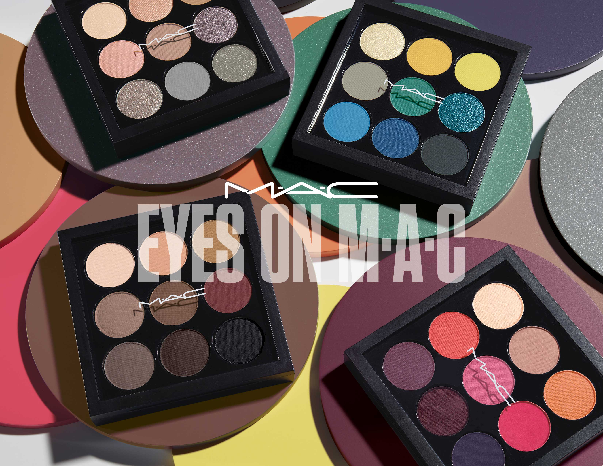
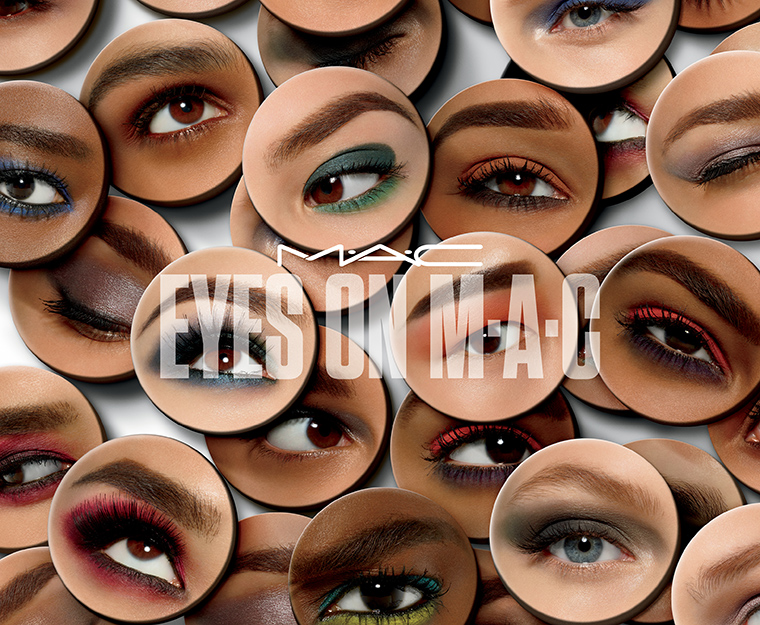
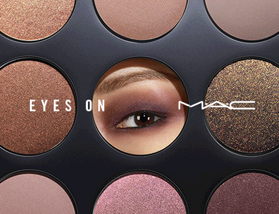
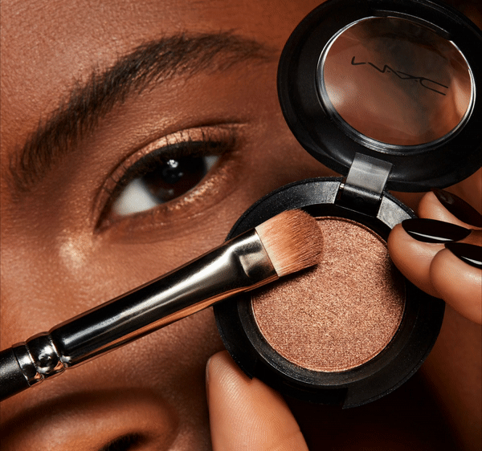
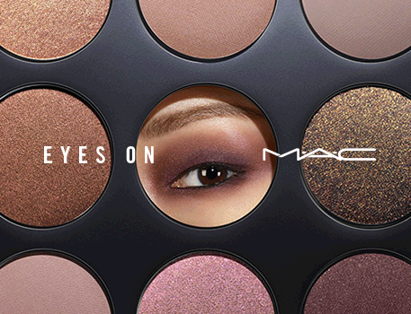
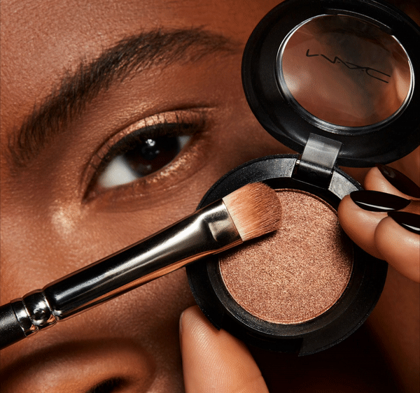

EYES
 
 



THERE IS A SUMPTUOUSNESS, AND THERE IS A LUXURY FEEL TO THE TEXTURES OF THE NEW COLOURS.
Eye shadow is a cosmetic that is applied to the eyelids and under the eyebrows. They are commonly used to give the eyes shades and light. Eye shadows prove depth and dimension to the eyes, complement the color of the eyes, or simply attract the eye.